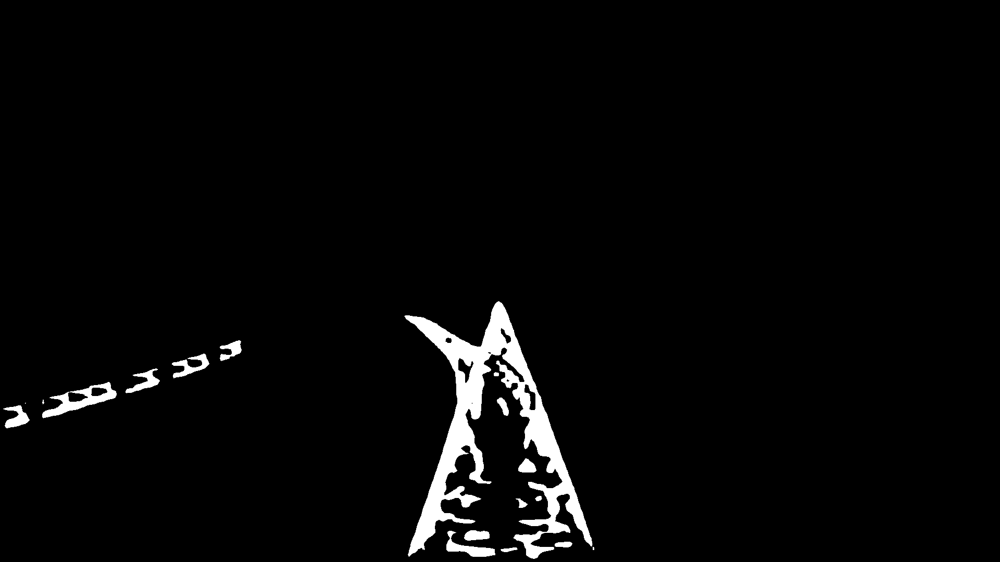
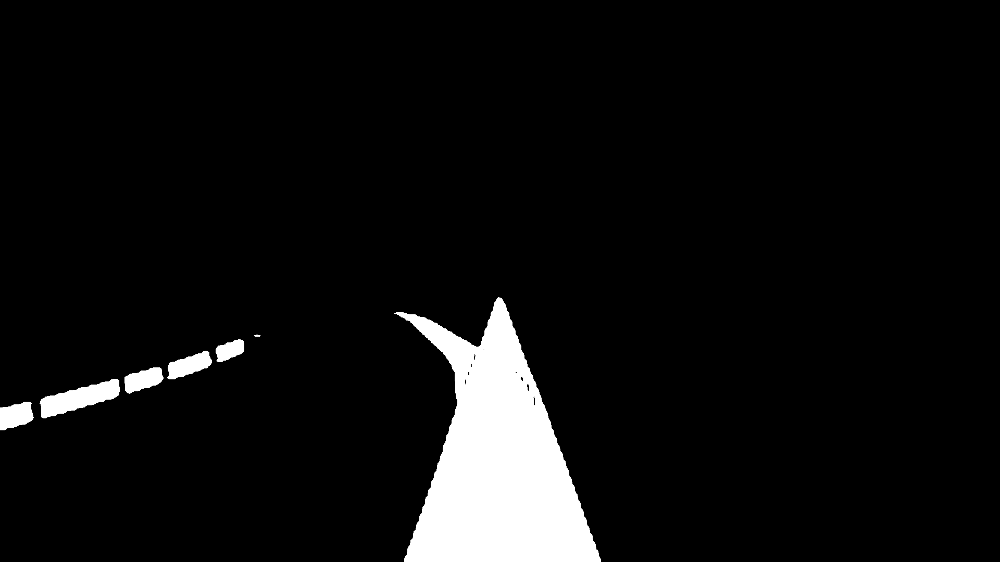

自detr问世之后，set prediction和bipartite matching的思想在视觉检测任务上攻城略地，大有完全消灭nms之势，实现真正的end-to-end。其中，实例分割/全景分割的算法如maskformer、K-net的效果很是让人眼馋，那么能否利用tensorrt实现半精度加速，做到实时乃至部署到边缘计算端呢？答案是肯定的。今天，我们就来尝试一把利用tensorrt将K-Net加速到20ms以内的实验。
pytorch转onnx
Knet从pytorch转onnx还是比较简单的，由于基本上没有onnx不支持的层存在，所以除了需要注意提前将代码中的torch.einsum转化成各种torch.matmul，再使用onnxsim简化一下就大功告成了。
onnx转tensorrt
我们直接使用tensorrt自带的trtexec进行onnx到tensorrt fp16的转换。结果tensorrt 7.1失败报错，报了的错看起来好像是instance norm层的问题。出于不想浪费任何心力在tensorrt老版本bug上的想法，直接把tensorrt升级到最新的 8.2再进行转换，结果很成功。
1 | [I] Latency: min = 15.2039 ms, max = 19.5652 ms, mean = 15.8112 ms, median = 15.7288 ms, percentile(99%) = 19.3462 ms |
我们可以看到在3090上，trtexec测试的K-Net平均速度达到了惊人的15ms。
是我转的不对么？FP16精度差是bilinear aglin_corner=False的问题吗
好像这篇博文到这里就结束了？事实并没有，我们使用转换完的K-Net随便找张图片测试并输出结果。。。好像掩码不大对劲？

于是再次将K-Net转换为FP32精度，嗯，看起来掩码结果是正确的，但平均速度只有41ms，和加速前的效果差不多。


问题到底出在哪里？出于多年转换模型的经验，我把目光放在了resize层，这个层实际上就是pytorch中的上采样层interpolate，2019年TensorRT6.0的时代就有人报告了当resize采用bilinear算法并且aglin_corner=False时的bug
Steps To Reproduce
build_engine build a network with only one layer, IReizeLayer
compare would print the trt result and torch result
got different result with align_corner=False
2
3
4
5
6
7
8
9
10
11
12
13
14
15
16
17
18
19
20
align_corners: False
torch.Size([1, 2, 2])
build_engine, scale_factor 2 align_corners False
1
<tensorrt.tensorrt.ILayer object at 0x7fb423d4c848> LayerType.RESIZE
[TensorRT] WARNING: Tensor DataType is determined at build time for tensors not marked as input or output.
[TensorRT] INFO: Detected 1 inputs and 1 output network tensors.
>>>>> test_bilinear2d.trt
compare, scale_factor 2 align_corners False
----------torch output
tensor([[[[-0.2651, -0.1464, 0.0908, 0.2095],
[-0.0041, -0.0402, -0.1124, -0.1485],
[ 0.5179, 0.1723, -0.5188, -0.8644],
[ 0.7789, 0.2786, -0.7220, -1.2223]]]], device='cuda:0')
==========trt output
tensor([[[-0.2651, -0.0278, 0.2095, 0.2095],
[ 0.2569, -0.1248, -0.5064, -0.5064],
[ 0.7789, -0.2217, -1.2223, -1.2223],
[ 0.7789, -0.2217, -1.2223, -1.2223]]], device='cuda:0')but setting align_corners=True, we got same result
难道这么多年老黄还没把bug修复？于是我将K-Net源码中所有的align_corners=False全都改为了align_corners=True重新生成onnx，这下总该成功了吧。但通向光明的道路总是曲折的，将align_corners改为True后的K-Net在FP32和FP16下的结果仍然不同，表现的和align_corners=False完全一致，难道不是resize层的问题，是我错怪老黄了么？
罪魁祸首，FP16精度溢出
在浏览器搜索栏直接输入‘’‘TensorRT FP16’‘’，出现的第一篇文章就吸引了我。这篇文章提到FP16模型失败的原因：
大概率是模型中某一层的计算FP16因为动态范围和精度不够，导致某个op节点的计算值溢出了。然后牵一发而动全身，整个模型后面的所有层都崩了。
于此同时，我注意到Tensorrt 8自带了模型分析工具polygraphy，其中convert可以将tensorrt模型每层的构建方式保存在一个json中，并可以利用这个json指导新的模型采用完全一致的构建方式。于是一个想法出现在了我的脑海中，我们可以手动修改replay.json中记录的每层精度范围，然后再将此json指导新模型的生成，使精度溢出的层在FP32下进行计算，那问题不就解决了么！那么哪一层是精度溢出的层呢？我们不妨打开K-Net生成的replay.json看一下，除了各种conv、reshape、mul、add、resize和relu层外，有一个Foreignnode层看起来显得很可疑！
1 | "{ForeignNode[Conv_623...Reshape_1553]}": { |
从名字上看，这个Foreignnode像是整合了模型后部的很大一部分区域，那么就决定是你了！把Foreignnode所有的输入和输出全都改为FLOAT，再使用修改后的replay.json重新指导生成tensorrt模型。
我们再进行测试，FP16下的K-Net模型终于得到了正确的结果，并且速度和没修改的FP16模型并没有什么太大的变化，仅仅慢了1ms。
1 | [I] Latency: min = 16.1807 ms, max = 18.1675 ms, mean = 16.6139 ms, median = 16.5773 ms, percentile(99%) = 17.1135 ms |
当然，仅仅靠肉眼观察掩码并不代表着tensorrt加速的模型一定正确，若想保证模型的输出与加速前一样需要直接比较输出结果的相对误差和绝对误差，不过这并非本文的主旨罢了。